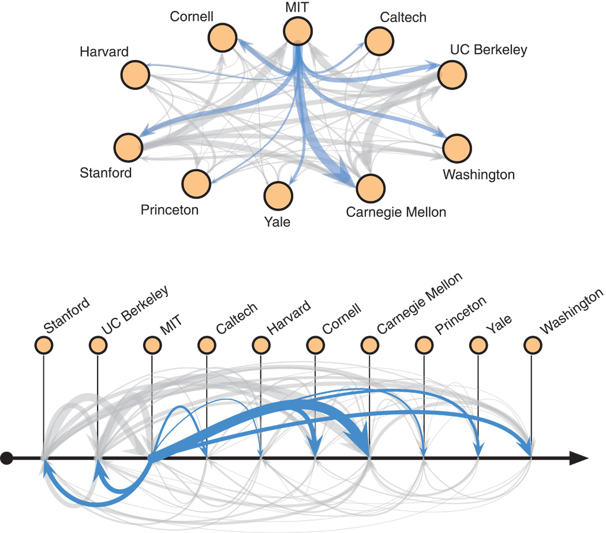
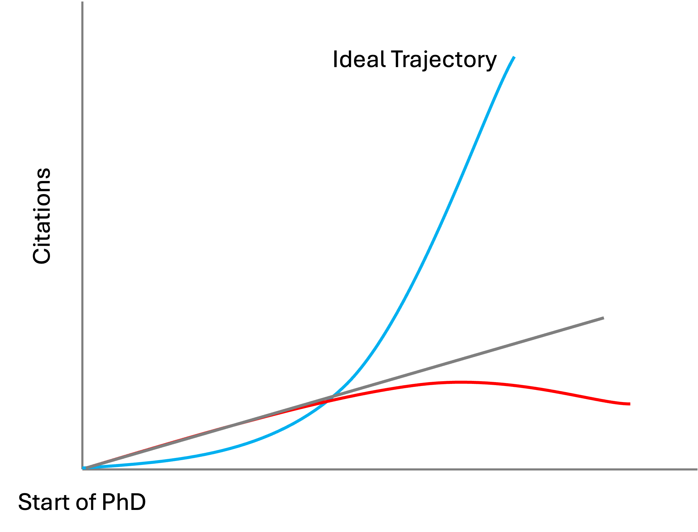
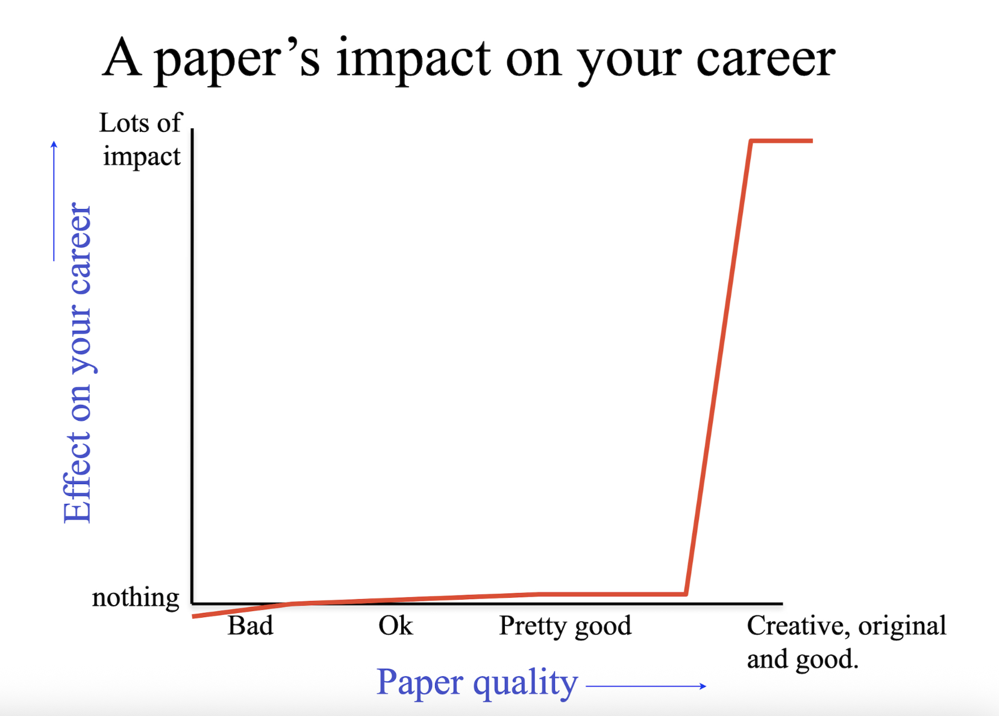
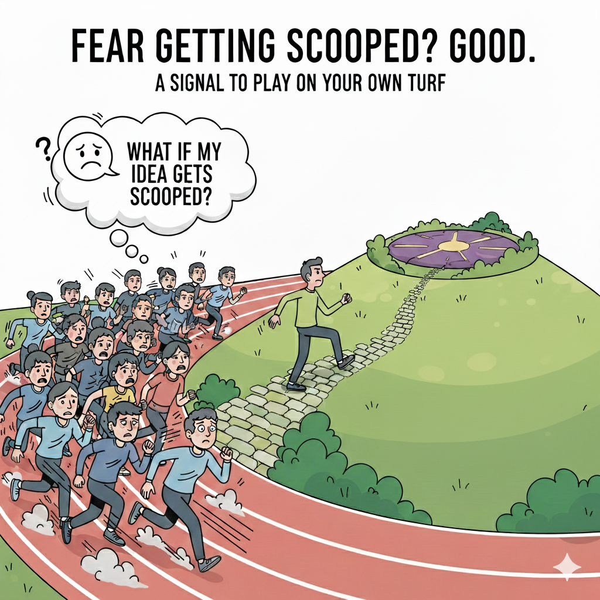
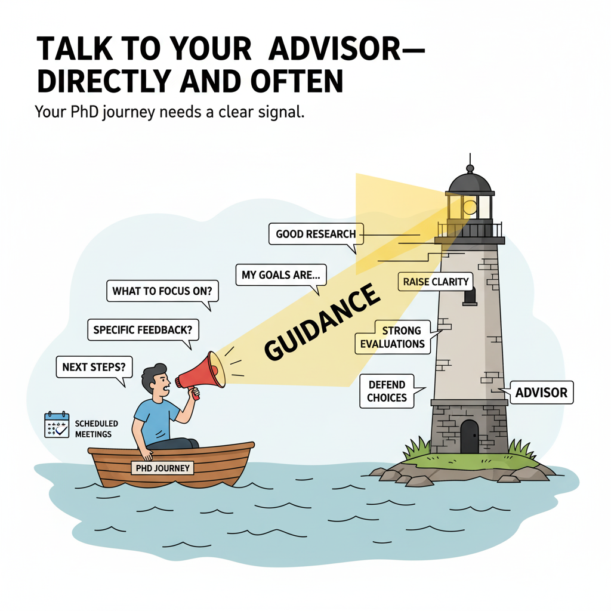
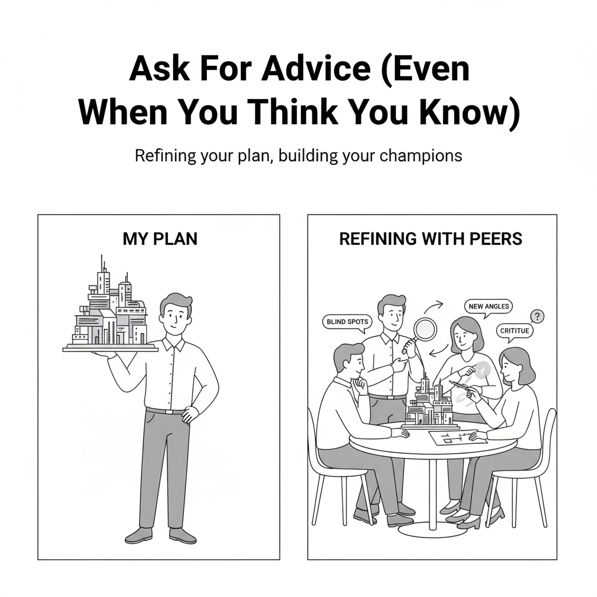
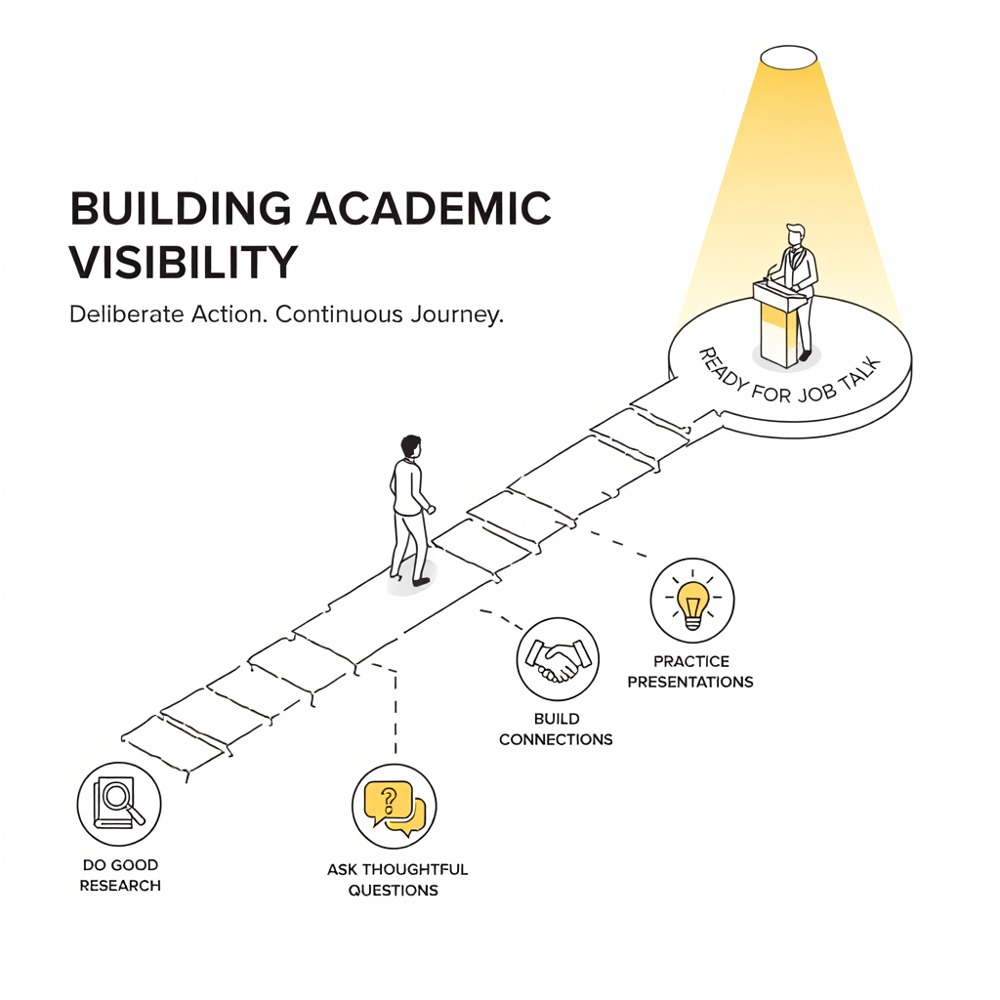
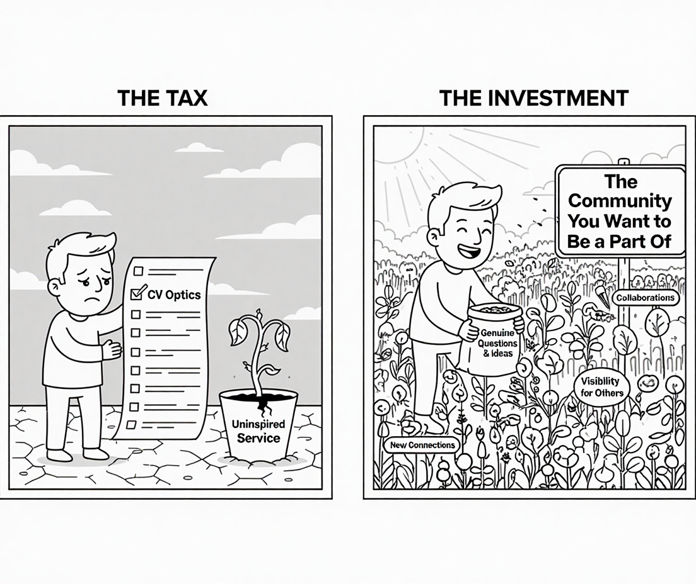

You are a couple of years into your PhD, and the big question starts to creep in: Am I doing this right? Most of the advice out there is for people at the finish line—graduating students—on job packets, interview scripts, and negotiation tactics. But there's far less for junior folks who are still deciding if the academic path is for them. This is for you. It’s what I learned (often the hard way) about work, visibility, community, and sanity—long before the job market was on the horizon.
The Reality of Institutional Branding
Let's start with the hard truth: your institution's brand and your advisor's reputation matter.
I was fortunate to work with a famous advisor at a strong program, and that combination absolutely opened doors for me. The "old boys' club" effect is real. The network is sticky: elite schools hire from each other more, which reinforces their dominance. This isn't just a feeling; the data backs it up. A disproportionate share of faculty jobs go to graduates of a small handful of universities (the proverbial "Big 4": MIT, Stanford, Berkeley, CMU).

Even programs like Illinois, where I did my PhD, don't appear prominently in these hiring networks despite producing excellent researchers. This shows just how concentrated academic hiring really is.
It's easy to look at this and feel like the game is rigged before it even starts. So, what do you do if you're not in that system? You don't compete on their terms; you change the game. The counter-strategy to prestige is to become the indispensable expert in your own niche. Find a new problem, a novel method, or a unique dataset and become the person people associate with it. If you can create an intellectual space where you hold the definitive edge, your prestige will follow your work, not the other way around.
Understanding Academic Metrics: They Matter
Now, another hard truth: Citations and your h-index matter. You will hear different views, but in my experience, they do. Just not the way you think.
When I asked mentors about going on the market, several of them immediately opened my Google Scholar page. They weren't looking at the raw numbers; they were looking for my productivity and a trend—the informal "hockey stick" (a slow start followed by a steep upward curve). The trajectory of that curve matters far more than any single number. Is it flat, or is it starting to climb?

For most fresh PhDs, the absolute numbers will still be relatively low, so the "hockey stick" pattern might not be dramatic yet. In my opinion, what committees are really looking for is evidence of growing impact—whether that's through a few papers that are starting to get noticed, or work that's opening up new questions for others to explore.
I have also heard from a few universities where they expect you to have 2,000 citations (if you work on applied machine learning like computer vision) to be seriously considered; otherwise, the recommendation letters need to explain the low citation count and articulate how you stand apart. You can look at recent hires at target institutions to get a sense of what benchmarks they're actually using.
The most important thing to understand is that you don't directly control the numbers; you control the work that earns attention. This is where many go wrong. Being a "paper machine" can backfire if your work is consistently incremental. Incremental steps are a necessary part of research, but you cannot build a career on them alone. I've heard from several senior colleagues who've reviewed candidates with stellar numbers (paper counts and metrics) but passed because the work itself lacked substance.
Aim to produce work that opens a new door for others to walk through. So, as you plan your next project, ask a different question: not just "Will this get published?" but "What new question will this allow someone else to ask?"
Aim for a "Slam Dunk," Paper Not Just Singles
In graduate school, it can feel like the goal is to accumulate as many publications as possible. But impact isn't always cumulative. Sometimes, it's exponential.
One significant, "slam dunk" paper can change your entire trajectory. I saw this firsthand. Late in my PhD, one paper suddenly put me on the radar for competitive post-PhD roles. At TTIC, a couple of subsequent papers added coherence and momentum, creating a clear story around my research. People remembered those three "anchor" projects far more than they would have a longer list of smaller, incremental wins.

This often means resisting the urge to publish quickly by "slicing a project thin." It requires patience and sometimes, a tough call. My PhD advisor, looking at my timeline, was ready for me to graduate. But I had a gut feeling that one project needed more time to reach its full potential. I pushed to stay for one more year, and that decision led to what is arguably my most significant work.
Of course, timing matters. You can't always predict which papers will have major impact—research is inherently uncertain. Some papers take time to have visible impact. Some people find their defining project early, and for others, it takes longer. Both paths are perfectly fine. The key is to maintain an ambitious mindset. Aim for work that excites you and opens new questions, or alternatively, think of problems where researchers you admire would say "Why didn't I think of that?" or "Wow, that's a neat idea and really useful." To cultivate this kind of ambitious thinking, I've always loved my PhD advisor's provocative slogan: "What problem do I need to solve to become famous?"
While "famous" might sound grandiose, the underlying question is a powerful strategic tool: What problem, if you solved it, would make an undeniable impact and open up a new field of inquiry? That's your slam dunk.
Fear Getting Scooped? Good! It’s a Signal.
"What if my idea gets scooped?" The fear is natural. We all feel it. But I've learned to stop treating that fear as a source of anxiety and start using it as a strategic signal.
If an idea feels easily scoopable, it's because you're in a crowded field where everyone is playing the same game. The signal is telling you to make a choice: either become the fastest executor in a head-to-head race, or change the game completely.
I had to make this choice. I knew I wasn't the fastest coder. I knew I wouldn't win a race to publish. So I decided to stop competing on those terms and instead play on my own turf.
For me, that meant focusing on niche but important problems where I could build specific, compounding advantages over time. Your turf is the hill where you hold a unique edge: it could be a dataset you've collected, a mathematical framing from your unique background, a higher standard for evaluation, or simply your taste in problems.

Once you've found your turf, own it. Harden your idea. Raise the bar on your experiments so high that casual competitors won't bother. Make your work definitive. Don't let the fear of being scooped push you into frantic, shallow work. Let it guide you to the deep, defensible problems where you can build something that lasts.
There's a tradeoff here: niche problems reduce competition and help you build unique expertise, but they may also limit your total impact and citation counts. For most students not at elite institutions, this tradeoff is worth it—better to be the leading expert in a smaller area than a minor player in a crowded field. But this doesn't mean you should automatically avoid crowded fields. If you have a unique perspective and can clearly stand out, it's worth taking a shot. In my view, this tradeoff between exploration and exploitation comes with experience—and with having honest conversations with your advisor about your strategic positioning. This brings me to the next point.
Talk To Your Advisor—Directly and Often
Your PhD advisor is the single most important guide on your academic journey, but they aren't a mind reader.
If you want their help, you need to be direct, specific, and strategic. Have honest conversations about your goals. Don't wait for them to ask. I found it useful to be explicit: "My goal is a top academic job after I graduate. Looking at my current trajectory, what are the one or two things I should focus on in the next six months to improve my chances?"
Often, the answer I got from my advisor, David, was simply: "Good Research, Good Research, Good Research." While it sounds obvious, there's a powerful signal in that repetition. I learned to "read between the lines" and translate that advice into concrete actions: ask good research questions, raise the bar on my evaluations, write with more clarity, and be prepared to defend every choice.

Here’s a tactic that worked for me: I scheduled dedicated feedback meetings after specific milestones, like a paper submission. The context was fresh, the work was a complete package, and we could have a focused conversation about its strengths and weaknesses. This is far more effective than trying to get vague feedback during a random weekly meeting. Create events that force constructive feedback.
Ask for Advice (Even When You Think You Know)
One of the biggest mistakes you can make in grad school is to stop seeking advice once you feel confident.
People are generous with their time and enjoy helping. Asking for their input is a powerful strategy, but it requires the right approach. This isn't about asking, "What should I do?" Instead, go to mentors, committee members, or senior colleagues with a fully formed plan and ask for a critique.
Try this framing: "Here's my plan for my next project. I'd love to get your read on it. Do you see any blind spots or potential pitfalls I might be missing?" This shows confidence while remaining open to input.
Often, you'll get a new angle or a crucial sanity check that strengthens your work. But the real benefit is relational. When you ask for advice, you're not just getting information; you're inviting someone to be a part of your journey. People become invested in the success of those they have helped guide.

Over time, these mentors don't just give you advice; they become your champions, connecting you to opportunities and advocating for you when you're not in the room.
Building Academic Visibility
Good work is necessary, but it is not sufficient. In academia, you have to ensure your work gets seen, and that requires deliberate, continuous action.
Don't wait for an invitation or external validation; create your own opportunities. Attend talks. Be the person who asks thoughtful questions. Be the person who follows up with speakers. Be the person whose work is distinct, not just a yet another follow up of what's currently trending. Connections don't just happen; you build them. They are what carry your ideas—and your reputation—across groups.
Master the Art of the Question
Every talk you attend is an opportunity. Treat the Q&A session as your training ground. The goal isn't to show off or ask a long, rambling question that's really a comment. The goal is to listen carefully and ask a crisp, honest question that shows you're engaged.
Doing this consistently achieves two things. First, it builds your visibility and reputation as a sharp, constructive thinker. Second, it sharpens your own ability to see the structure in problems—a skill that will pay dividends in your own research.

Giving Talks is an Art
I still remember giving what was probably my worst-ever talk during my CMU MISC seminar in 2021. It was rushed, confusing, and I felt terrible afterward. But I'm incredibly glad that failure happened then, and not later during a high-stakes job talk.
Giving talks is an art, and like any craft, it improves only with practice. Invite yourself to present at university reading groups or lab meetings. Those early, lower-stakes talks will give you perspective, force you to simplify your message without dumbing it down, and expose your weak points when there's still time to fix them. You do not want your job talk to be your first time in front of a serious, external audience.
Build the Community You Want to Be a Part Of
Service is often seen as a chore, a box to check. But it can be one of the most rewarding parts of your academic life—if you do it right. I often see people taking on service roles just because they feel they "should." or because it looks good on a CV. This is a mistake. Service should be about building the community you want to be a part of.That line from Sara Beery deeply resonates with me. During the isolation of COVID, I was frustrated that the same handful of big names were invited to every virtual seminar, while junior researchers struggled for visibility. So, I started an early-career speaker series at UIUC. Our first lineup included a dozen of the field's rising stars, many of whom are now leading their own labs.
That series continued for years and eventually became a for-credit seminar. It helped others, and it taught me how to create a surface area for new ideas. Later, the "Scholars and Big Models" workshop grew from a genuine question I had after reading a DeepMind paper that flexed its enormous GPU budget: How can academics possibly do impactful research without that scale?
I started by emailing a few senior faculty. That single question turned into a multi-year workshop series. Today, I often meet people who know me from those events. While I still want to be known for my science, I've learned that community building is part of the work—especially when it's driven by genuine curiosity, not by CV optics.

Mental Health and Imposter Feelings
A PhD is a marathon that can test your mental health. It's easy to feel small, especially when you see flashy results from other labs.
The feeling that you don't belong—that you're an impostor—is nearly universal. Recognize those feelings for what they are: not evidence that you're an impostor, but a natural byproduct of working on ambitious problems surrounded by talented people. Don't let that feeling derail you. Instead, reframe the game.
Pick problems where scale isn’t the only lever; focus on areas where your unique taste, careful design, or rigorous measurement can become your edge. When you find those problems, your confidence will grow because you're playing to your strengths, not trying to out-muscle others.
Most importantly, protect your well-being. Block out time for rest. Learn to say "no" when you must. And on the hard days, read a running list of your small wins so you don't forget you're making progress.
A Necessary Caveat: Survivorship Bias
This was my path, not a universal formula. Timing, luck, and privilege played a significant role. I had specific collaborators, contexts, and constraints that you won't. Please treat these ideas as heuristics, not as rigid rules. Your path will and should look different.
Final Thoughts
After all this advice, the most important thing is to believe in yourself and focus on what you find genuinely exciting. You control the inputs: the clarity of your ideas, the care in your execution, the generosity you show your community, and your persistence through the hard parts.
If you get those inputs right, the metrics and recognition tend to follow. But more importantly, you’ll build a body of work, a network of colleagues, and a story that you are proud to stand by. And that, ultimately, is what matters most in an academic career.